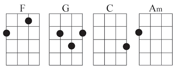

There are so many chords available, that I'm only going to stick to four major ones. These are the chords Jennie taught me, and they are used often in songs. These are the F chord, the G chord, the C chord and the A minor chord.
This chart depicts the uke if it were laid on its back, with the body facing down. The top line of each inner square is a fret. The vertical lines are the strings. The black dots signify the position your finger needs to be in. So for instance, with the Am chord, your finger goes on the 2nd fret of the top string. If there is no black dot, that string is still played openly strummed.
Back Next Page